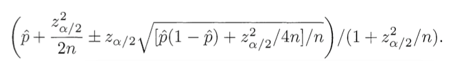

El problema propuesto es el siguiente: Al tener una gran cantidad de elementos clasificados por una gran cantidad de usuarios a traves de ratings positivos y negativos, cómo se puede entonces rankear dichos elementos de manera que efetivamente un elemento que es mejor que otro esté más arriba en el ranking. Esto supone lógicamente encontrar un score para los elementos que permita rankearlos.
Se exponen dos soluciones básicas, las cuales no resuelven el problema:
Score = (Positive ratings) − (Negative ratings)
Score = (Positive ratings)/(Negative ratings)
No son buena soluciones pq no toman en consideración el tamaño de la muestra, valorando igual elementos con cantidades de raitngs muy distintas.
Luego se propone una solución más acertada, la cual se basa en en el intervalo de confianza para un parametro de bernoulli (en este caso la media) desarrollada por Edwin B. Wilson. En esta formula se calcula el límite inferior del intervalo de confianza, el cual pasa a ser el Score que se está buscando.
En esta formula p̂ es la fracción de ratings positivos en los ratings totales y n son los ratings totales.
Esta formula también se puede adaptar a casos en los que no existen ratings negativos, haciendo que uno de los positivos, preferentemente la media del intervalo, sea el "cero". Por lo tanto los menores a este número serán los negativos y los mayores los positivos.
Analisis:
Esta fórmula funciona de mejor forma que las demás porque toma en consideración el tamaño de la muestra además del desnivel entre positivos y negativos, generando un número más cercano a la realidad.
Discución:
Esta solución funciona muy bien para ratings de dominio binario, sin embargo no es perfecta para un dominio más grande. Una posible solución a esto es considerar la distancia d de un rating a cero como d ratings distintos. Por ejemplo si un usuario ingresa un rating de valor 5 a un cierto elemento, entonces se considera como 5 ratings de valor 1. Sin embargo esta solución no es la mejor, ya que si por ejemplo un elemento tiene pocos ratings positivos, pero de valores muy grandes, no es a ciencia cierta verdad que ese elemento es de la misma "calidad" que otro con muchos ratings, pero con valoraciones más bajas. En este sentido tal vez sea más acertado valorar más un elemento con 100 ratings de valor 10 que uno con 20 ratings de valor 50, ya que la muestra del primero es más abultada y probablemente más cercana a la realidad.
Siguiendo con el problema descrito, pueden existir otros criterios que se ajusten mejor a la realidad que el mencionado. Se propone entonces ponderar un raiting por un valor entre cero y uno que decrece a medida que el rating sube y asi obtener un valor que equivaldría a una cantidad de ratings independientes, pero que sería menor al obtenido con la propuesta anterior. De esta forma se valorarían más los ratings más cercanos al cero.